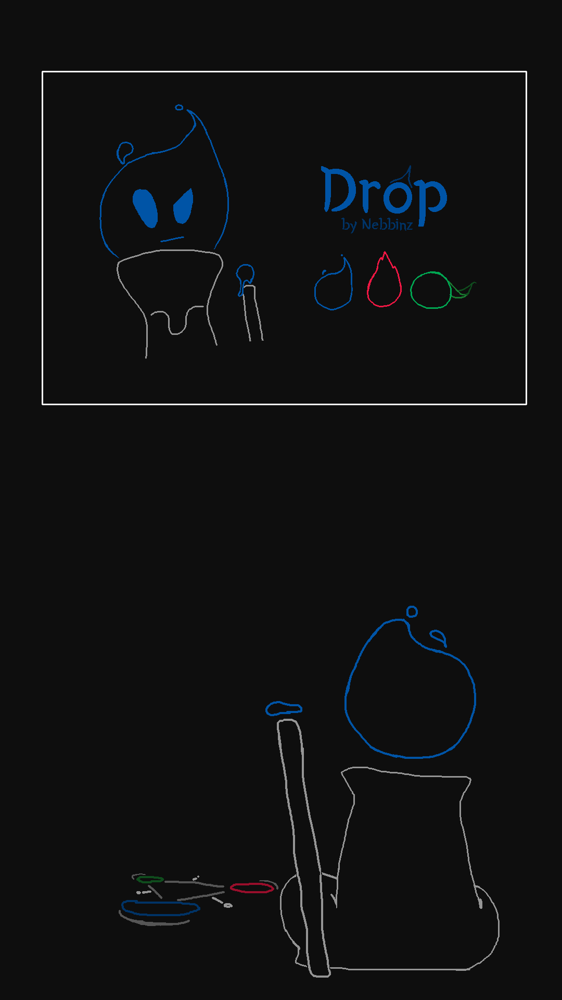

Working on Projects is my favorite part, so I'm really excited to share them!
This March, I worked on a Digital Comic called "Drop." I felt I needed a recent and complet work.
Read on MSPFA or WebToons.

MIT Maker Portfolio (Contents are before FY).
I didn't get into MIT, but working on this made me feel about myself.
I made this Salamender/Lizard that moves fluidly almost as if it was alive.
Mortaza helped with the Math for the leg positions.
UPGRADE Fall Game Jam 2024
I worked on Hazard Hurdle!
UPGRADE Spring Game Jam 2025
I worked on Wavering Function.
I worked on an Minecraft Plugin that summons particles with math formulas!
I don't have a plan for this, but I made it to experiment.
it looks neat.
Mortaza helped me with the math for changing the color using HSV to RGB.
(It's way easier here for the INDEX button because of the lack of conversion).